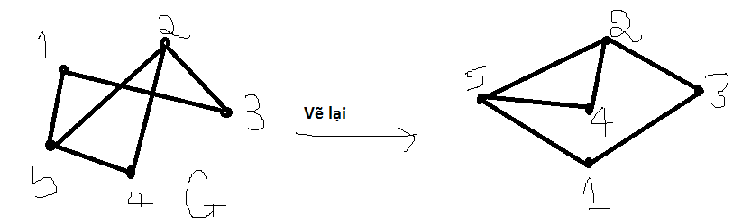

Về trang chủ
Bài viết đồ thị phẳng
I. Nội dung và mục tiêu tìm hiểu:
1. Khái niệm và định nghĩa
2. Công thức Euler
3. Bất đẳng thức EV
4. Định lý KURATOWSKI
5. Ứng dụng đồ thị phẳng trong:
a. Tô màu đồ thị
b. Bài toán lập lịch
II. Khái niệm và định nghĩa:
- Một đồ thị gọi là đồ thị phẳng (Planar Graph) nếu ta có thể vẻ nó trên một mặt phẳng sao cho không có 2 cạnh nào cắt nhau ở 1 điểm không
phải là đỉnh của đồ thị (việc vẽ đồ thị trên 1 mặt phẳng là biểu diễn phẳng của đồ thị)

- Cho G là 1 đồ thị phẳng:
+ Các cạnh của đồ thị chia mặt phẳng thành các miền (Region)
+ Phần giới hạn bởi 1 chu trình đơn khác gọi là 1 miền hữu hạn
+ Mọi đồ thị phẳng đều có miền vô hạn duy nhất
+ Chu trình giới hạn miền gọi là biên của miền
III. Công thức Euler
- Cho G là đồ thị phẳng liên thông với m, n đỉnh, r miền (trên biểu diễn phẳng của G)
- Khi đó:
n - m + r = 2
* Hệ quả 1:
G là 1 đồ thị phẳng với n đỉnh, m cạnh, r miền, p là số thành phần liên thông. Khi đó ta có:
n - m + r = p + 1
- Các đồ thị K1,K2,K3,K4 là các đồ thị phẳng. Đồ thị K5 không là đồ thị phẳng
- Đồ thị Km,n (m,n>=3) không là đồ thị phẳng.
* Định lý: Nếu H là đồ thị con của G:
Nếu H phẳng thì G phẳng
Nếu H không phẳng thì G không phẳng
Như vậy: Một đồ thị G không phẳng nếu nó có đồ thị con là K3,3 hoặc K5
IV. Bất đẳng thức EV
Bất đẳng thức EV (The Edges - Vertices Inequality);
Cho G là đồ thị liên thông có n đỉnh, m cạnh và đai là g >= 4. Nếu G phẳng thì ta có bất đẳng thức:
g
m<= ------- (n - 2)
g - 2
V. Định lý KURATOWSKI
1. Phép chia sơ cấp:
Cho đồ thị G = (V,E). Phép bỏ đi 1 cạnh (u,v) thuộc E và thêm và đỉnh w và 2 cạnh (u,w),(w,v) được gọi là phép chia sơ cấp
2. Các đồ thị đồng phôi
Đồ thị G được gọi là đồng phôi (horneomorphic) với đồ thị G nếu G' có được từ G bằng 1 chuỗi các phép chia sơ cấp
3. Định lý Kuratowski:
Một đồ thị là đồ thị phẳng khi và chỉ khi nó không chứa đồ thị con đồng phôi với K3,3 và K5
VI. Tô màu đồ thị
Chúng tôi sẽ nói rõ hơn ở 1 bài viết khác có tên là Tô màu đồ thị và bài toán lập lịch